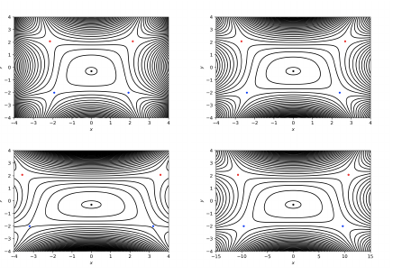
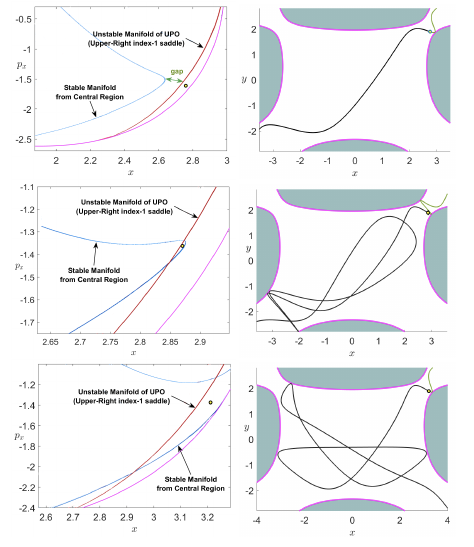

\section{Introduction}
Dynamical matching is an interesting chemical dynamical phenomenon that occurs in a variety of organic chemical reactions. A caldera PES arises in many organic chemical reactions, such as the vinylcyclopropane-cyclopentene rearrangement [1], [2], the stereomutation of cyclopropane [3], the degenerate rearrangement of bicyclo[3.1.0]hex-2-ene [4], [5] or that of 5-methylenebicyclo[2.1.0]pentane [6].
The caldera PES is characterized by a flat region or shallow minimum at its center surrounded by potential walls and multiple symmetry related index one saddle points that allow entrance and exit from this intermediate region. This shape of the potential resembles the collapsed region within an errupted volcano (caldera), and this is the reason that Doering [7] and co-workers refer to this type of potential as a caldera.
The manifestation of the dynamical matching phenomenon is essentially a statement of momentum conservation and Newton’s first law of motion. It is observed that a trajectory entering the Caldera from a channel corresponding to a high energy index-1 saddle (reactant) experiences little force in the caldera due to the ‘’flatness’’ of the PES, and it exits through the diametrically opposing low energy index-1 saddle (product). Consequently, this mechanism determines to a considerable extent the outcome of the chemical reaction. However, not all trajectories entering the caldera experience dynamical matching. It is observed that some trajectories may interact with the shallow potential well and become temporarily trapped in the region. This can dramatically influence the manner in which they exit from the well.
A detailed study of the trajectory behavior in a two degree-of-freedom (DoF) caldera PES was given in [8], where a more general discussion of caldera-like PESs in organic reactions is also presented. Further work elucidating the phenomena of dynamical matching and trapping in this caldera model was carried out in [9], [10]. We will describe the results in these papers in more detail when we describe the Hamiltonian model in the next section.
In this chapter we describe the phase space mechanism that controls dynamical matching. We show that dynamical matching is controlled by a heteroclinic intersection between the unstable manifold of a periodic orbit controlling entrance to the caldera and the stable manifold of a periodic orbit in the region of the shallow minimum. When a heteroclinic connection exists, trajectories thst enter the caldera are transported to the shallow minimum, and they experience temporary trapping in this region. When there is no heteroclinic connection, trajectories enter and exit the caldera without interacting with the region of the central minimum. Knowledge of this phase space mechanism is significant because it allows us to predict existence, and non-existence, of dynamical matching.
This chapter is outlined as follows. In Section \ref{sec:model} we describe the Caldera PES that we use in this work, its critical points and stability, and the resulting Hamiltonian model. Section \ref{sec:DM_mech} is devoted to analyzing the phase space structures that govern dynamical matching.
\section{The Hamiltonian Model of the Caldera} \label{sec:model}
We give a brief description of the caldera potential energy surface and Hamiltonian as described in [8]. The caldera potential has a stable equilibrium point at the center, referred to as the central minimum. This potential has an axis of symmetry, the y-axis. We have also the existence of potential walls around the central minimum. On these potential walls we encounter four 1-index saddles (two for lower values of energy, referred to as the lower saddles, and two for higher values of energy, referred to as the upper saddles). In this paper we consider the stretched version of the caldera potential:
\begin{equation} \label{eq1} V(x,y)=c_1(y^2+(\lambda x)^2) + c_2y - c_3((\lambda x)^4 + y^4 - 6 (\lambda x)^2 y^2) \end{equation}\noindent The potential parameters are $c_1=5$, $c_2=3$,$c_3=-3/10$ and $0<\lambda \leq 1$. The classical symmetric caldera PES [8], [9] corresponds to $\lambda = 1$ and is shown in the upper left hand panel of Fig. \ref{equi}. We depict also in Fig. \ref{equi} the contours and the equilibrium points of the potential for different values of $\lambda$, for example $\lambda=0.8$, $\lambda=0.6$ and $\lambda=0.2$. We also compile in Table \ref{tab:ta08} the positions and energies of the upper index-1 saddles for different values of $\lambda$. We observe that the positions of the index-1 saddles move away from the center of the Caldera as we decrease the parameter $\lambda$. The position of the central minimum is $(x,y) = (0,-0.297)$ with energy $E = -0.448$ for all values of the stretching parameter $\lambda$.

| Equilibrium point | x | y | $\lambda$ |
|---|---|---|---|
| Upper LH index-1 saddle | -2.149 | 2.0778 | 1 |
| Upper RH index-1 saddle | 2.149 | 2.0778 | 1 |
| Upper LH index-1 saddle | -2.6862 | 2.0778 | 0.8 |
| Upper RH index-1 saddle | 2.6862 | 2.0778 | 0.8 |
| Upper LH index-1 saddle | -3.5815 | 2.0778 | 0.6 |
| Upper RH index-1 saddle | 3.5815 | 2.0778 | 0.6 |
| Upper LH index-1 saddle | -10.7446 | 2.0778 | 0.2 |
| Upper RH index-1 saddle | 10.7446 | 2.0778 | 0.2 |
\label{tab:ta08} \caption{The upper index-1 saddles of the PES in Eq. \eqref{eq1} ("RH" and "LH" are the abbreviations for right hand and left hand respectively) for different values of $\lambda$. The energy for each of the cases is $E = 27.0123$.}
The Hamiltonian for the system with two DoF is the sum of kinetic plus potential energy:
\begin{equation} H(x,y,p_x,p_y) = \frac{p_x^2}{2m_x} + \frac{p_y^2}{2m_y} + V(x,y) \label{eq2} \end{equation}\noindent
where $V(x,y)$ is the Caldera PES in Eq. \eqref{eq1}, and $m_x$, $m_y$ are the masses of the $x$ and $y$ DoF respectively. In this work, for simplicity, we take $m_x = m_y = 1$. Hamilton's equations of motion are given by: \begin{equation} \begin{cases} \dot x = \dfrac{\partial H} {\partial p_x} = \dfrac{p_x}{m_x} \\[.4cm] \dot y = \dfrac{\partial H} {\partial p_y} = \dfrac{p_y}{m_y} \\[.4cm] \dot p_x = -\dfrac{\partial H} {\partial x} = 2 \lambda \, (\lambda x) \left[2c_3 \left((\lambda x)^2 - 3 y^2 \right) - c_1 \right] \\[.4cm] \dot p_y = -\dfrac {\partial H} {\partial y} = 2 y \left[ 2 c_3 \left(y^2 - 3 (\lambda x)^2\right) - c_1 \right] - c_2 \end{cases} \label{eq3} \end{equation}
\section{The Phase Space Mechanism Governing Dynamical Matching} \label{sec:DM_mech}
As we have described in the introduction, the caldera gets its name from the shape of the PES. However, transport across the caldera is a dynamical phenomenon governed by the template of geometrical structures in phase space, and dynamical matching is just one particular type of dynamical phenomenon that we are considering in this paper. First, we describe the phase space structures that mediate transport into the caldera.
In order to reveal the phase space structures that are responsible for the mechanism that allows and prevents dynamical matching, we use in this work the method of Lagrangian descriptors (LDs), see e.g. [11], [12], [13]. Lagrangian descriptors is a trajectory-based scalar diagnostic that has been developed in the nonlinear dynamics literature to explore the geometrical template of phase space structures that characterizes qualitatively distinct dynamical behavior. The technique was originally developed for studies of transport and mixing in geophysical flows [14] but has recently been applied to problems in chemical reaction dynamics e.g [15], [16], [17], where the computation of chemical reaction rates relies on the knowledge of the phase space structures that separate reactants from products. Recent modifications of this technique, known as variable integration time Lagrangian descriptors, have made it applicable to finding phase space structure in open Hamiltonian systems [18], [19], [20]. Details on how they are applied for revealing phase space structures in caldera-like PESs are described in [21], [22]. In this short paper we focus on presenting the results relevant to dynamical matching.
For a two DoF system, the fixed energy surface is three dimensional. For energies above that of the upper saddles an unstable periodic orbit exists in the energy surface. This is a consequence of the Lyapunov subcenter manifold theorem [23], [24], [25]. In a fixed energy surface, these periodic orbits have two dimensional stable and unstable manifolds. Trajectories move away from the periodic orbits along the direction of the unstable manifold in forward time. In the upper left panel of Fig. fig:2 we show a segment of the unstable manifold of the upper right-hand saddle directed towards the interior of the caldera.
The region of the central minimum of the caldera may also contain unstable periodic orbits. The stable manifolds of these periodic orbits direct trajectories towards the central minimum. In the upper left panel of Fig. fig:2 we show a segment of the stable manifold of an unstable periodic orbit in the region of the central minimum directed away from the central minimum.
If the stable manifold of a periodic orbit in the central minimum intersects the unstable manifolds of one of the upper saddles we have a mechanism for trajectories to enter the caldera and be directed towards the region of the central minimum. In dynamical systems terminology this is referred to as a heteroclinic connection. This would inhibit dynamical matching, as trajectories entering the caldera would exhibit (temporary) trapping in the region of the central minimum. If the heteroclinic connection breaks, as might occur if a parameter is varied, the mechanism for directing trajectories towards the regions of the central minimum no longer exists, and dynamical matching is possible. Hence, a heteroclinic bifurcation is the critical phase space structure that inhibits or allows dynamical matching, which we now show.
In order to explore the formation of a heteroclinic intersection between any stable manifold coming from an UPO of the central region of the Caldera and the unstable manifold of the UPO of the upper-right index-1 saddle, as the stretching parameter of the Caldera PES is varied, we probe the phase space structures in the following Poincar\'e surface of section: \begin{equation} \mathcal{U}^{+}_{x,p_x} = \lbrace (x,y,p_x,p_y) \in \mathbb{R}^4 \;|\; y = 1.88409 \; ,\; p_y > 0 \;,\; E = 29 \rbrace \label{psos} \end{equation}
In the middle-left panel of Fig. fig:2, we observe that there is a critical value of stretching parameter ($\lambda=0.778$) for the formation of this heteroclinic connection. For values of the stretching parameter above the critical value there is no heteroclinic connection between any stable manifold coming from an UPO of the central region of the Caldera and the unstable manifold of the UPO of the upper index-1 saddle (see the upper left panel of Fig. fig:2). The non-existence of these heteroclinic connections results in the phenomenon of dynamical matching. In this case, if we integrate an initial condition inside the region of the unstable manifold of UPO of the upper-right index-1 saddle forward and backward in time, we see in the upper right panel of Fig. fig:2 that the resulting trajectory comes from the region of the upper-right index-1 saddle and exits the caldera through the region of the opposite lower saddle without any interaction with the central area of the caldera.
Now, for values of the stretching parameter equal or above the critical value we have the formation of heteroclinic connections between the stable manifold coming from an UPO of the central region of the Caldera and the unstable manifold of the UPO of the upper-right index-1 saddle, (see middle and lower left panels of Fig. fig:2). This heteroclinic connection destroys the dynamical matching mechanism because many trajectories become trapped inside the lobes between the two invariant manifolds. We can see this better if we choose an initial condition inside a lobe, as we illustrate in the middle and lower left panels of Fig. fig:2 and integrate it forward and backward. We observe that the resulting trajectory is temporarily trapped in the central area of the caldera before it exits from this area, see the middle and lower right panels of Fig. fig:2.

- J. E. Baldwin, “Thermal Rearrangements of Vinylcyclopropanes to Cyclopentenes,” Chemical reviews, vol. 103, no. 4, pp. 1197–1212, 2003.
- Z. Goldschmidt and B. Crammer, “Vinylcyclopropane rearrangements,” Chem. Soc. Rev, vol. 17, pp. 229–267, 1988.
- C. Doubleday, K. Bolton, and W. L. Hase, “Direct Dynamics Study of the Stereomutation of Cyclopropane,” Journal of the American Chemical Society, vol. 119, no. 22, pp. 5251–5252, 1997.
- C. Doubleday, M. Nendel, K. N. Houk, D. Thweatt, and M. Page, “Direct Dynamics Quasiclassical Trajectory Study of the Stereochemistry of the Vinylcyclopropane - Cyclopentene Rearrangement,” Journal of the American Chemical Society, vol. 121, no. 19, pp. 4720–4721, 1999.
- C. Doubleday, C. P. Suhrada, and K. N. Houk, “Dynamics of the Degenerate Rearrangement of Bicyclo[3.1.0]hex-2-ene,” Journal of the American Chemical Society, vol. 128, no. 1, pp. 90–94, 2006.
- M. B. Reyes, E. B. Lobkovsky, and B. K. Carpenter, “Interplay of Orbital Symmetry and Nonstatistical Dynamics in the Thermal Rearrangements of Bicyclo[n.1.0]polyenes,” J Am Chem Soc, vol. 124, pp. 641–651, 2002.
- W. von E. Doering, X. Cheng, K. Lee, and Z. Lin, “Fate of the Intermediate Diradicals in the Caldera: Stereochemistry of Thermal Stereomutations, (2 + 2) Cycloreversions, and (2 + 4) Ring-Enlargements of cis- and trans- 1-Cyano-2-(E and Z)-propenyl-cis-3,4-dideuteriocyclobutanes,” Journal of the American Chemical Society, vol. 124, no. 39, pp. 11642–11652, 2002.
- P. Collins, Z. C. Kramer, B. Carpenter, G. S. Ezra, and S. Wiggins, “Nonstatistical dynamics on the caldera,” Journal of Chemical Physics, vol. 141, no. 034111, 2014.
- M. Katsanikas and S. Wiggins, “Phase space structure and transport in a Caldera potential energy surface,” International Journal of Bifurcation and Chaos, vol. 28, no. 13, p. 1830042, 2018.
- M. Katsanikas and S. Wiggins, “Phase Space Analysis of the Nonexistence of Dynamical Matching in a Stretched Caldera Potential Energy Surface,” International Journal of Bifurcation and Chaos, vol. 29, no. 04, p. 1950057, 2019.
- A. M. Mancho, S. Wiggins, J. Curbelo, and C. Mendoza, “Lagrangian descriptors: A method for revealing phase space structures of general time dependent dynamical systems,” Communications in Nonlinear Science and Numerical Simulation, vol. 18, no. 12, pp. 3530–3557, 2013.
- C. Lopesino, F. Balibrea-Iniesta, V. J. García-Garrido, S. Wiggins, and A. M. Mancho, “A Theoretical Framework for Lagrangian Descriptors,” International Journal of Bifurcation and Chaos, vol. 27, no. 01, p. 1730001, 2017.
- S. Naik, Garcı́a-Garrido Vı́ctor J., and S. Wiggins, “Finding NHIM: Identifying high dimensional phase space structures in reaction dynamics using Lagrangian descriptors,” Communications in Nonlinear Science and Numerical Simulation, vol. 79, p. 104907, 2019.
- J. A. J. Madrid and A. M. Mancho, “Distinguished trajectories in time dependent vector fields,” Chaos, vol. 19, p. 013111, 2009.
- G. T. Craven and R. Hernandez, “Lagrangian descriptors of thermalized transition states on time-varying energy surfaces,” Physical review letters, vol. 115, no. 14, p. 148301, 2015.
- G. T. Craven and R. Hernandez, “Deconstructing field-induced ketene isomerization through Lagrangian descriptors,” Physical Chemistry Chemical Physics, vol. 18, no. 5, pp. 4008–4018, 2016.
- G. T. Craven, A. Junginger, and R. Hernandez, “Lagrangian descriptors of driven chemical reaction manifolds,” Physical Review E, vol. 96, no. 2, p. 022222, 2017.
- A. Junginger, L. Duvenbeck, M. Feldmaier, J. Main, G. Wunner, and R. Hernandez, “Chemical dynamics between wells across a time-dependent barrier: Self-similarity in the Lagrangian descriptor and reactive basins,” The Journal of chemical physics, vol. 147, no. 6, p. 064101, 2017.
- S. Naik and S. Wiggins, “Finding normally hyperbolic invariant manifolds in two and three degrees of freedom with Hénon-Heiles type potential,” Phys. Rev. E, vol. 100, no. 2, p. 022204, 2019.
- V. J. García-Garrido, S. Naik, and S. Wiggins, “Tilting and Squeezing: Phase space geometry of Hamiltonian saddle-node bifurcation and its influence on chemical reaction dynamics,” arXiv preprint:1907.03322 (\it Under Review), 2019.
- M. Katsanikas, V. J. García-Garrido, and S. Wiggins, “Detection of Dynamical Matching in a Caldera Hamiltonian System using Lagrangian Descriptors,” arXiv preprint: 1911.11811 (\it Under Review), 2019.
- M.Katsanikas, Garcı́a-Garrido V. J., and S.Wiggins, “The Dynamical Matching Mechanism in Phase Space for Caldera-Type Potential Energy Surfaces,” arXiv preprint: 1911.09644 (\it Under Review), 2019.
- J. Moser, “Periodic orbits near an equilibrium and a theorem by Alan Weinstein,” Communications on Pure and Applied Mathematics, vol. 29, no. 6, pp. 727–747, 1976.
- A. Weinstein, “Normal modes for nonlinear Hamiltonian systems,” Inventiones mathematicae, vol. 20, no. 1, pp. 47–57, 1973.
- P. H. Rabinowitz, “Periodic solutions of Hamiltonian systems: a survey,” SIAM J. Math. Anal., vol. 13, no. 3, pp. 343–352, 1982.